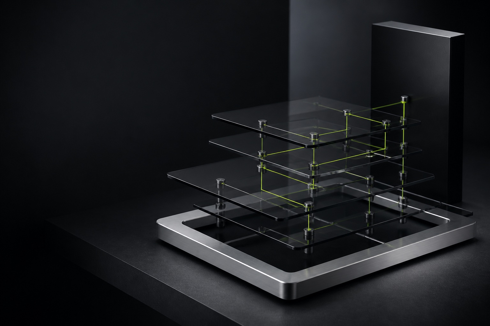
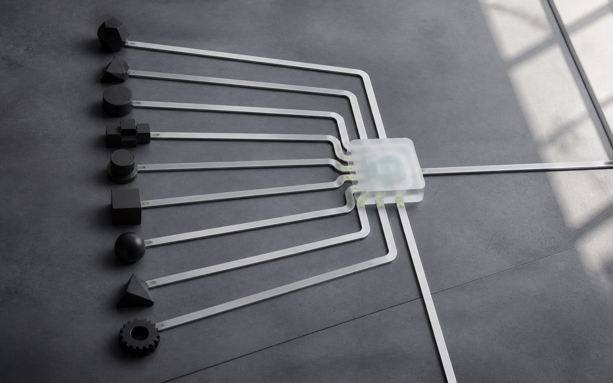
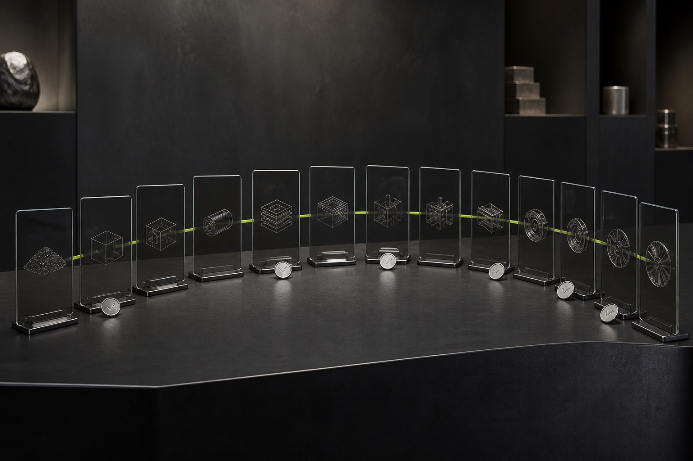

Lean
Minimum governed path for bounded work with explicit decisions and evidence.
Governed product delivery
Turn product intent into traceable decisions, artifacts, releases, and operations across every agent you use.

VPOS installs the same governed Skill where each agent expects it, while every contributor works from one shared project state.
Codex, Claude Code, Gemini CLI, GitHub Copilot, Cursor, Windsurf
OpenCode, Cline, Zed, plus explicit custom roots

The same methodology scales without turning every project into the largest possible repository.
Minimum governed path for bounded work with explicit decisions and evidence.
The recommended balance for real product teams, multi-agent delivery, and reviewable handoffs.
Recommended starting pointExpanded controls for regulated, enterprise, high-risk, or contract-heavy delivery.
Each phase inherits decisions, evidence, applicability, and change impact from the work before it.

Every active artifact has inputs, ownership, verification, evidence, dependencies, and a handoff.
Connect business intent to requirements, design, architecture, tests, release evidence, and operations.
Agents can draft and verify. Humans retain approval, risk acceptance, applicability, gates, and releases.
Generate the physical project structure from profile, phase, applicability, and dependency rules.
vibe-product-os status --strict --json
Inspect the governed state without inventing readiness.
Dry runs, evidence-backed updates, migration controls, rollback, and content-addressed archives protect the baseline.
Start with one command
The guided installer detects supported hosts, previews every destination, preserves existing Skills, and writes only after consent.
npx vibe-product-os@pilot install
Run this command inside the project you want VPOS to govern.
.agents/skills/vibe-product-os
.claude/skills
.cline/skills
Dry-run preview, explicit consent, bounded overwrite, and recoverable multi-target operations.